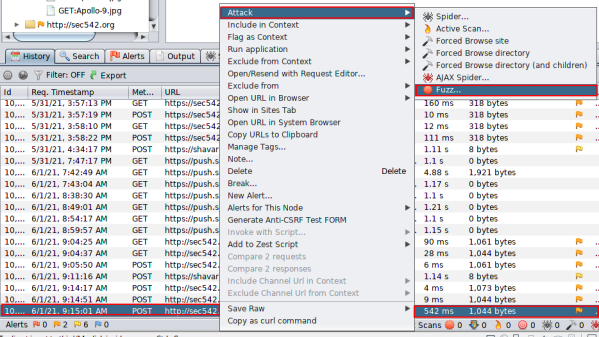
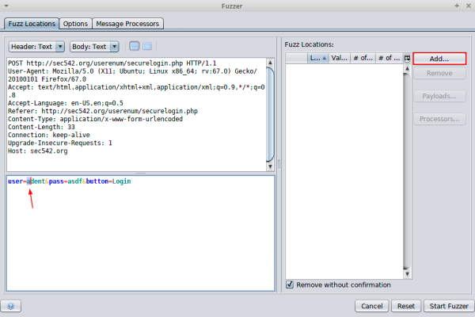
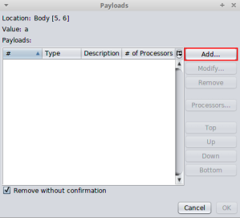
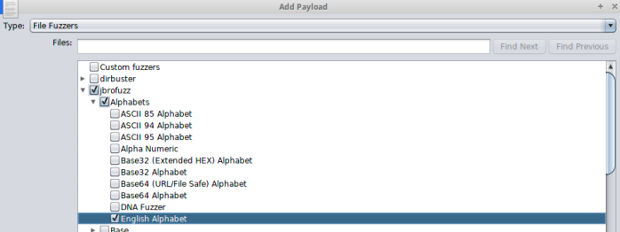
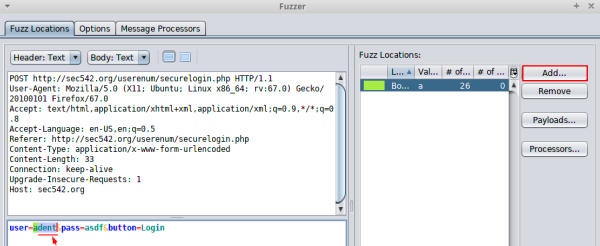
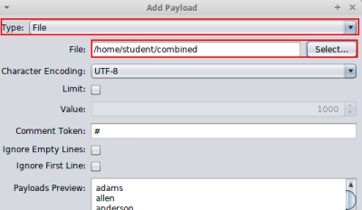
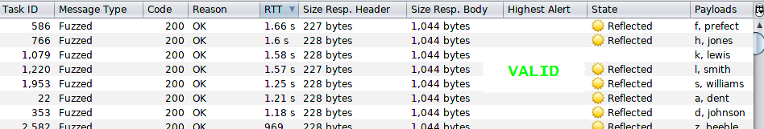
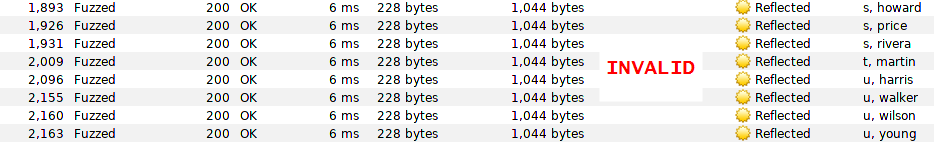

Attack by Fuzzing (example)
Fuzzing with ZAP1. Try to login in the webpage with ZAP configured in Proxy
2. From ZAP sect the login request → Attack → Fuzz
Configuration
• fuzz the first initial character of the user
1) In this example we have highlated only one character “a” because we want to fuzz only the first initial of the user
 2) Click add in the Window Payloads
 3) Type: File Fuzzers → jbrofuzz (triangle not checkbox) -> Alphabets (triangle not checkbox)-> English Alphabet (checkbox)
 4) Then click "Add" and after it "OK"
• Fuzz the last part of the user (Last Name)
1) highlated last part of the user “dent” because we want to fuzz only the final part of the user
 2) Click add in the Window Payloads
3) Select the payload → Type: File → File:[wordlist] → Add → OK
Start the Fuzzer
1. Find the valid users
Every attempt generates a 200 HTTP response code, both successful and failed. They looks identical, the only difference is that some have highet RTT
Sort them by the RTT (Round Trip Time) column, largest to smallest
We should see that the RTT (round trip time) for valid users is more than ten times greater than the RTT for invalid users
 